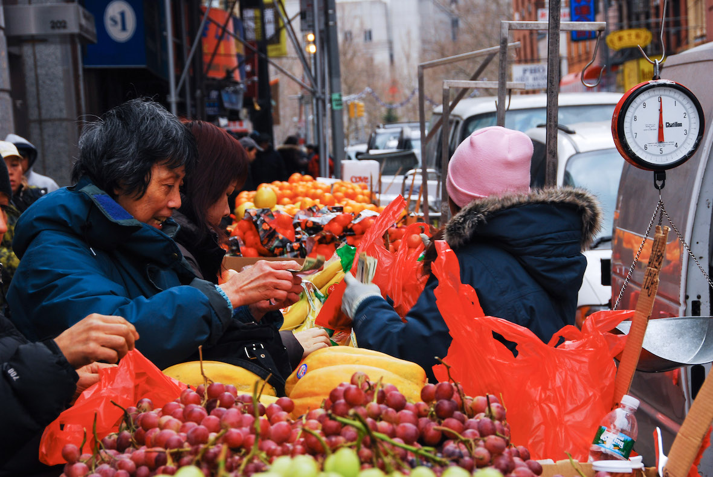
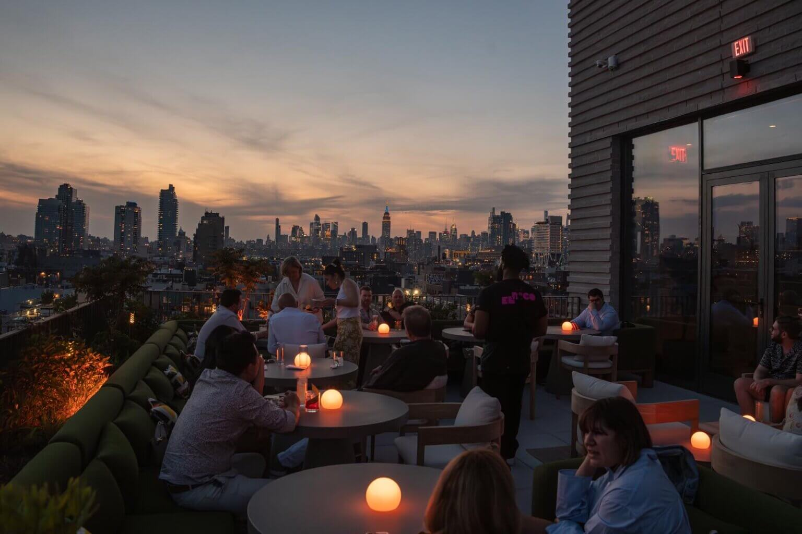
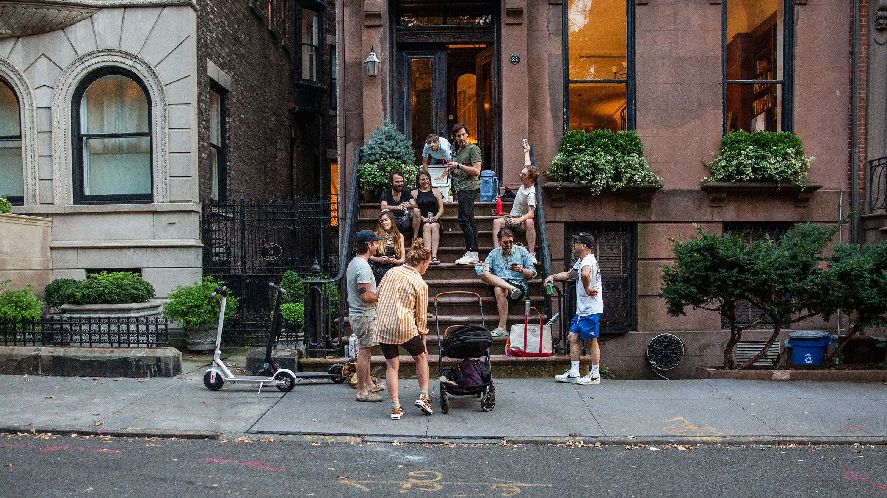
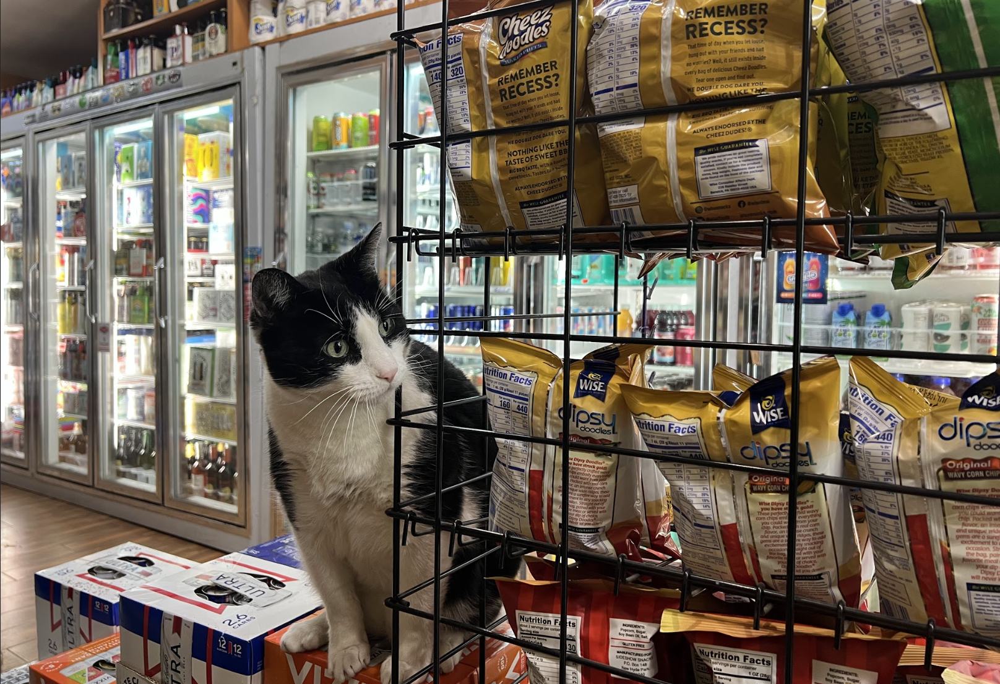
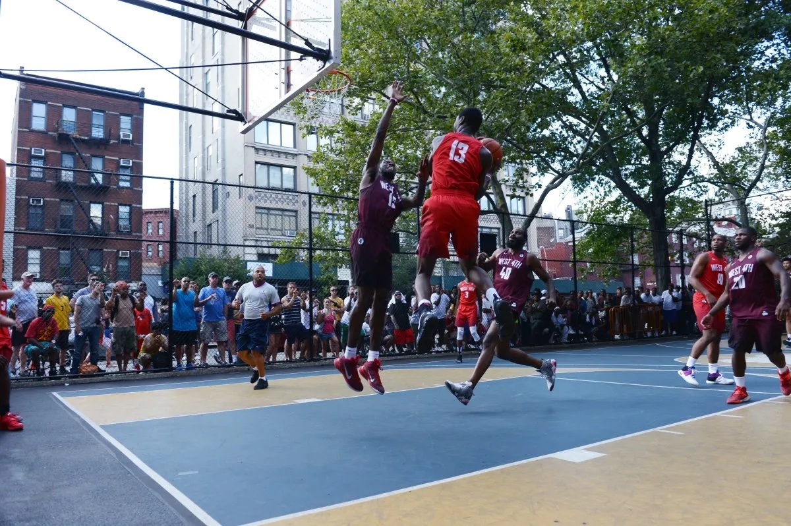
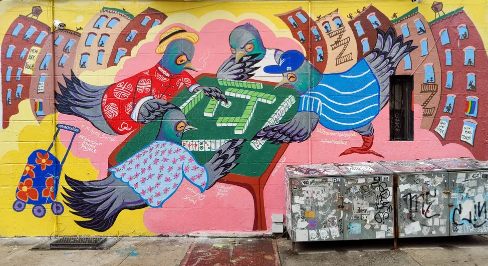
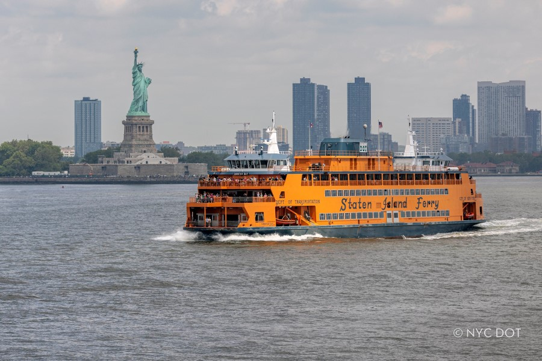

NYC Through Local Eyes
These are real moments that capture the energy, diversity, and character of the five boroughs, the NYC you will actually experience when you visit.
Photo Collection







Explore These Neighborhoods
Every photo tells a story about a specific corner of the city. Want to know where to eat, what to see, and how to get there? Start with the neighborhood guides.